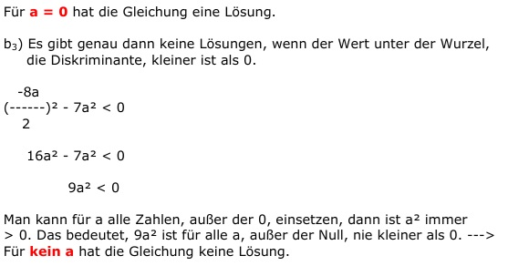
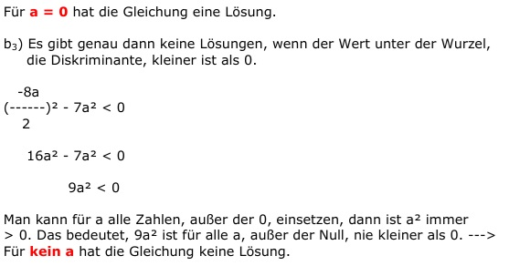

Quadratische Gleichungen Aufgabe 77
Für welche Zahlen für a hat die Gleichung
x² - 8ax + 7a² = 0
b1) genau zwei Lösungen
b2) eine Lösung
b3) keine Lösung?
 

Quadratische Gleichungen Aufgabe 77 Für welche Zahlen für a hat die Gleichung x² - 8ax + 7a² = 0 b1) genau zwei Lösungen b2) eine Lösung b3) keine Lösung?